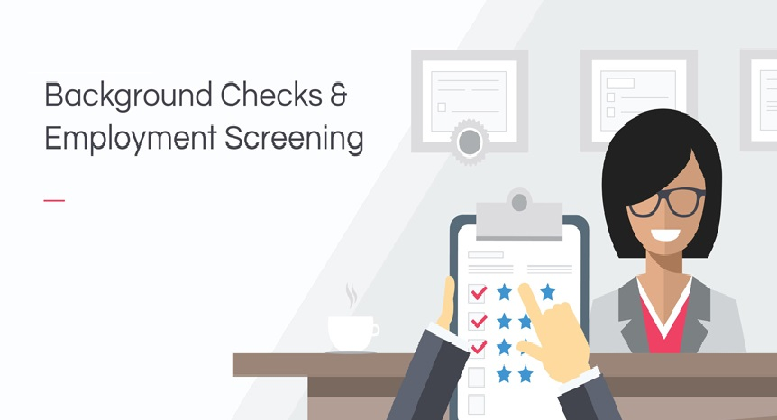

☰

As organizations throughout the world toughen up their recruiting and pre-employment screening processes, it puts more focus on those who haven’t as the employers of choice for those who have poor performance records or other serious misconduct issues that they are seeking to hide including fake degrees, certifications, accomplishments, misconduct, job duration, titles, fake referees or past criminal records.
Hiring the wrong employee can bring unnecessary problems to a company. For that reason, we have tailor-made a set of Pre-Post employment screening measures to help human resources professionals identify the right candidates. We hope our offering assists organizations in strengthening its screening process to reduce the risk of hiring the wrong candidates and increase the probability in hiring the right candidates who fit with the organizational culture, contribute more and stay longer!
EMPLOYMENT HISTORY VERIFICATION
EDUCATIONAL RECORDS VERIFICATION
ADDRESS VERIFICATION
COURT RECORDS SEARCH
GLOBAL DATABASE SEARCH
DRUG SCREENING